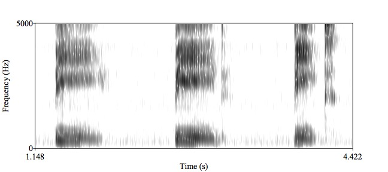
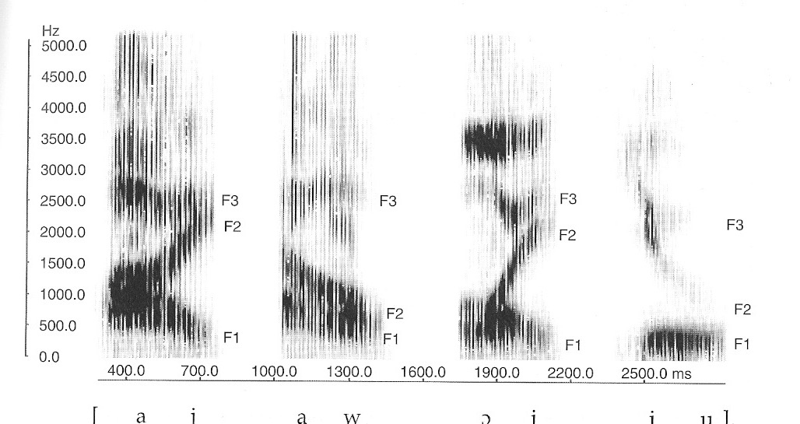
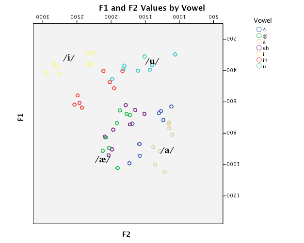

### Will is out of town Friday - His office hours will be canceled - **Class is canceled Friday!** - Take the time to be kind to yourself. --- # What does speech sound like? ### Will Styler - LIGN 6 --- ### Review - Visualizing Sound --- ### "Noise" - Waveform <img width="70%" src="phonmedia/noisewaveform.jpg"> <audio controls src="phonmedia/noise.wav"></audio> --- ### "Noise" - Spectral Slice (FFT) <img width="70%" src="phonmedia/noisefft.jpg"> <audio controls src="phonmedia/noise.wav"></audio> --- ### "Noise" - Spectrogram <img width="70%" src="phonmedia/noisebbspectrogram.jpg"> <audio controls src="phonmedia/noise.wav"></audio> --- ### Today's plan: - What do vowels look like? - What do consonants look like? --- # Fundamentals of Speech --- ### Voicing <img width="70%" src="phonmedia/noisebbspectrogram.jpg"> <audio controls src="phonmedia/noise.wav"></audio> --- ### Spectrograms show us many evenly-spaced vertical lines - These are individual glottal pulses - Higher pitched voices will have...? - More tightly spaced lines! --- ### Duration /bi/, /bid/, /bit/  --- ### Resonances in the mouth <img width="70%" src="phonmedia/noisebbspectrogram.jpg"> <audio controls src="phonmedia/noise.wav"></audio> --- ### You know what's created entirely by resonances in the mouth? --- # Vowels --- ### What is a vowel? * A vowel is voicing passing through (and resonating in) an unobstructed vocal tract! * If we change the position of the tongue, we change the resonances --- <img class="r-stretch" src="phonmedia/voweltongue.png"> --- ### What is a vowel? A vowel is voicing passing through (and resonating in) an unobstructed vocal tract! If we change the position of the tongue, we change the resonances * Different resonances *filter* the sound differently and determine the vowel quality * **Different tongue shapes create different resonances, and different vowels!** --- <img class="r-stretch" src="phonmedia/voweltongue2.png"> --- ### What do vowels sound like? * We talk about vowel quality in terms of "formants" * These are bands of the spectrum where the energy is strongest * The frequencies of these formants are our primary cues to vowels --- <img class="r-stretch" src="phonmedia/iformants.png"> --- <img class="r-stretch" src="phonmedia/iformantslabeled.png"> --- <img class="r-stretch" src="phonmedia/vowelformants.gif"> <small>Different American English vowels, as spoken by a male speaker</small> --- ### If the position of the tongue causes formants to appear... - What happens in diphthongs, where the tongue moves? ---  --- <img width="70%" src="phonmedia/noisebbspectrogram.jpg"> <audio controls src="phonmedia/noise.wav"></audio> --- ### Formants alone can be enough for some perception! --- ### Let's listen to some sounds <audio controls> <source src="phonmedia/thanksforattendingf3.mp3" type="audio/mp3"> </audio> <audio controls> <source src="phonmedia/thanksforattendingf2.mp3" type="audio/mp3"> </audio> <audio controls> <source src="phonmedia/thanksforattendingf1.mp3" type="audio/mp3"> </audio> --- ### Let's listen to some sounds <audio controls> <source src="phonmedia/thanksforattendingf3.mp3" type="audio/mp3"> </audio> <audio controls> <source src="phonmedia/thanksforattendingf2.mp3" type="audio/mp3"> </audio> <audio controls> <source src="phonmedia/thanksforattendingf1.mp3" type="audio/mp3"> </audio> <br> ### Now let's play all three at once! <audio controls> <source src="phonmedia/thanksforattendingsine.mp3" type="audio/mp3"> </audio> --- ### Let's listen to some sounds <audio controls> <source src="phonmedia/thanksforattendingf3.mp3" type="audio/mp3"> </audio> <audio controls> <source src="phonmedia/thanksforattendingf2.mp3" type="audio/mp3"> </audio> <audio controls> <source src="phonmedia/thanksforattendingf1.mp3" type="audio/mp3"> </audio> <br> ### Now let's play all three at once! <audio controls> <source src="phonmedia/thanksforattendingsine.mp3" type="audio/mp3"> </audio> <br> ### Does this help? <audio controls> <source src="phonmedia/thanksforattendingorig.mp3" type="audio/mp3"> </audio> --- ### So, we think about vowels in terms of formants --- <img class="r-stretch" src="phonmedia/vowelformants.gif"> <small>Different American English vowels, as spoken by a male speaker</small> --- ### Vowel formants are reflections of articulations - They vary depending on the tongue's position - ... as well as the size and shape of the talker's head - *Different formants from the same speaker mean different vowels* - ... kind of --- <img class="r-stretch" src="phonmedia/ipaformantsgraph.png"> ---  --- <img class="r-stretch" src="phonmedia/clearspeech_alltokens.png"> --- <img class="r-stretch" src="phonmedia/clearspeech_alltokensellipses.png"> --- <img class="r-stretch" src="humorimg/trainwreck.png"> --- ## **Vowel perception is really, really hard** - ... so, consonants must be easy, right? --- <img class="r-stretch" src="humorimg/false.jpg"> --- # Consonant Acoustics --- ### /l r w j/ act a lot like vowels <img class="r-stretch" src="phonmedia/sonorant_acoustics.jpg"> --- ### Nasals look like quiet vowels <img class="r-stretch" src="phonmedia/nasalcons_acoustics.jpg"> --- ### Fricatives have little black clouds - ... and the cloud is higher frequency as you get closer to the mouth <img class="r-stretch" src="phonmedia/fricative_acoustics.jpg"> --- ### Voiced fricatives have little clouds *and* voicing <img class="r-stretch" src="phonmedia/fricative_voiced_acoustics.jpg"> --- ### For stops, the signal... stops (with voicing) <img class="r-stretch" src="phonmedia/stop_voiced_acoustics.jpg"> --- ### For stops, the signal... stops (without voicing) <img class="r-stretch" src="phonmedia/stop_voiceless_acoustics.jpg"> --- ### Taps are really tricky to spot <img class="r-stretch" src="phonmedia/tap_acoustics.jpg"> --- # Let's Practice! --- ### Animals will finds cute - Chickadees, Cats, Dogs, Pandas, Koalas, Owls, Velociraptors, Woodpeckers --- <img class="r-stretch" src="phonmedia/animals/cats.jpg"> --- <img src="phonmedia/animals/cats.jpg"> <audio controls src="phonmedia/animals/cats.wav"> --- <img class="r-stretch" src="phonmedia/animals/dogs.jpg"> --- <img src="phonmedia/animals/dogs.jpg"> <audio controls src="phonmedia/animals/dogs.wav"> --- <img class="r-stretch" src="phonmedia/animals/owls.jpg"> --- <img src="phonmedia/animals/owls.jpg"> <audio controls src="phonmedia/animals/owls.wav"> --- <img class="r-stretch" src="phonmedia/animals/chickadees.jpg"> --- <img src="phonmedia/animals/chickadees.jpg"> <audio controls src="phonmedia/animals/chickadees.wav"> --- <img class="r-stretch" src="phonmedia/animals/koalas.jpg"> --- <img src="phonmedia/animals/koalas.jpg"> <audio controls src="phonmedia/animals/koalas.wav"> --- <img class="r-stretch" src="phonmedia/animals/velociraptors.jpg"> --- <img src="phonmedia/animals/velociraptors.jpg"> <audio controls src="phonmedia/animals/velociraptors.wav"> --- <img class="r-stretch" src="phonmedia/animals/woodpeckers.jpg"> --- <img src="phonmedia/animals/woodpeckers.jpg"> <audio controls src="phonmedia/animals/woodpeckers.wav"> --- <img class="r-stretch" src="phonmedia/animals/pandas.jpg"> --- <img src="phonmedia/animals/pandas.jpg"> <audio controls src="phonmedia/animals/pandas.wav"> --- ### If you want more of this... - We have a spectrogram reading group! - [Rob Hagiwara's Monthly Mystery Spectrogram Webzone](http://home.cc.umanitoba.ca/~robh/index.html) - They're *really* difficult --- ## "Why all this time on spectrogram reading?" --- ### Speech Acoustics is the basis of automatic speech recognition - If we don't know what words sound like, we can't teach computers what they sound like - Spectrograms give us great information about frequency, power, and time - Similar patterns are easy to confuse for humans and computers - This lets us understand a bit more about how ASR might work --- ## For next time - We'll figure out how computers could possibly do this --- <huge>Thank you!</huge>